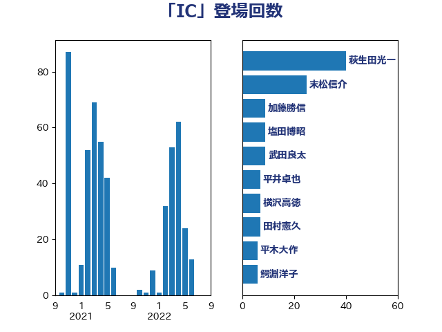

単語「IC」

| 萩生田光一 | 自由民主党 | 40 回 |
| 末松信介 | 自由民主党 | 25 回 |
| 加藤勝信 | 自由民主党 | 9 回 |
| 塩田博昭 | 公明党 | 9 回 |
| 武田良太 | 自由民主党 | 9 回 |
| 平井卓也 | 自由民主党 | 7 回 |
| 横沢高徳 | 立憲民主党 | 7 回 |
| 田村憲久 | 自由民主党 | 7 回 |
| 平木大作 | 公明党 | 6 回 |
| 鰐淵洋子 | 公明党 | 6 回 |
| 上野通子 | 自由民主党 | 5 回 |
| 岬麻紀 | 日本維新の会 | 5 回 |
| 斉藤鉄夫 | 公明党 | 5 回 |
| 本村伸子 | 日本共産党 | 5 回 |
| 森田俊和 | 立憲民主党 | 5 回 |
| 中西祐介 | 自由民主党 | 4 回 |
| 伊藤岳 | 日本共産党 | 4 回 |
| 小林鷹之 | 自由民主党 | 4 回 |
| 掘井健智 | 日本維新の会 | 4 回 |
| 小沢雅仁 | 立憲民主党 | 3 回 |
| 平将明 | 自由民主党 | 3 回 |
| 柴田巧 | 日本維新の会 | 3 回 |
| 梶山弘志 | 自由民主党 | 3 回 |
| 渡辺周 | 立憲民主党 | 3 回 |
| 熊田裕通 | 自由民主党 | 3 回 |
| 牧島かれん | 自由民主党 | 3 回 |
| 藤川政人 | 自由民主党 | 3 回 |
| 西銘恒三郎 | 自由民主党 | 3 回 |
| 野上浩太郎 | 自由民主党 | 3 回 |
| 下条みつ | 立憲民主党 | 2 回 |
| 吉良よし子 | 日本共産党 | 2 回 |
| 塩川鉄也 | 日本共産党 | 2 回 |
| 宮内秀樹 | 自由民主党 | 2 回 |
| 小西洋之 | 立憲民主党 | 2 回 |
| 山口那津男 | 公明党 | 2 回 |
| 岸真紀子 | 立憲民主党 | 2 回 |
| 日下正喜 | 公明党 | 2 回 |
| 梅村みずほ | 日本維新の会 | 2 回 |
| 榛葉賀津也 | 国民民主党 | 2 回 |
| 河野太郎 | 自由民主党 | 2 回 |
| 田村智子 | 日本共産党 | 2 回 |
| 田畑裕明 | 自由民主党 | 2 回 |
| 竹内譲 | 公明党 | 2 回 |
| 義家弘介 | 自由民主党 | 2 回 |
| 舩後靖彦 | れいわ新選組 | 2 回 |
| 芳賀道也 | 国民民主党 | 2 回 |
| 若宮健嗣 | 自由民主党 | 2 回 |
| 葉梨康弘 | 自由民主党 | 2 回 |
| 西村康稔 | 自由民主党 | 2 回 |
| 赤羽一嘉 | 公明党 | 2 回 |
| 金子恭之 | 自由民主党 | 2 回 |
| 一谷勇一郎 | 日本維新の会 | 1 回 |
| 三木亨 | 自由民主党 | 1 回 |
| 上川陽子 | 自由民主党 | 1 回 |
| 下村博文 | 自由民主党 | 1 回 |
| 中川正春 | 立憲民主党 | 1 回 |
| 仁木博文 | 無所属 | 1 回 |
| 伊佐進一 | 公明党 | 1 回 |
| 伊藤孝恵 | 国民民主党 | 1 回 |
| 佐藤英道 | 公明党 | 1 回 |
| 勝部賢志 | 立憲民主党 | 1 回 |
| 坂本哲志 | 自由民主党 | 1 回 |
| 大家敏志 | 自由民主党 | 1 回 |
| 安江伸夫 | 公明党 | 1 回 |
| 室井邦彦 | 日本維新の会 | 1 回 |
| 宮本徹 | 日本共産党 | 1 回 |
| 宮路拓馬 | 自由民主党 | 1 回 |
| 山際大志郎 | 自由民主党 | 1 回 |
| 岡本あき子 | 立憲民主党 | 1 回 |
| 岸田文雄 | 自由民主党 | 1 回 |
| 川田龍平 | 立憲民主党 | 1 回 |
| 平林晃 | 公明党 | 1 回 |
| 後藤茂之 | 自由民主党 | 1 回 |
| 本田顕子 | 自由民主党 | 1 回 |
| 杉久武 | 公明党 | 1 回 |
| 松山政司 | 自由民主党 | 1 回 |
| 柴山昌彦 | 自由民主党 | 1 回 |
| 森まさこ | 自由民主党 | 1 回 |
| 櫻井周 | 立憲民主党 | 1 回 |
| 池田佳隆 | 自由民主党 | 1 回 |
| 河西宏一 | 公明党 | 1 回 |
| 浅野哲 | 国民民主党 | 1 回 |
| 清水真人 | 自由民主党 | 1 回 |
| 清水貴之 | 日本維新の会 | 1 回 |
| 片山大介 | 日本維新の会 | 1 回 |
| 石川博崇 | 公明党 | 1 回 |
| 石川大我 | 立憲民主党 | 1 回 |
| 福重隆浩 | 公明党 | 1 回 |
| 舟山康江 | 国民民主党 | 1 回 |
| 菅義偉 | 自由民主党 | 1 回 |
| 菊田真紀子 | 立憲民主党 | 1 回 |
| 西岡秀子 | 国民民主党 | 1 回 |
| 西田実仁 | 公明党 | 1 回 |
| 道下大樹 | 立憲民主党 | 1 回 |
| 酒井庸行 | 自由民主党 | 1 回 |
| 青山周平 | 自由民主党 | 1 回 |
| 高野光二郎 | 自由民主党 | 1 回 |
| 高階恵美子 | 自由民主党 | 1 回 |